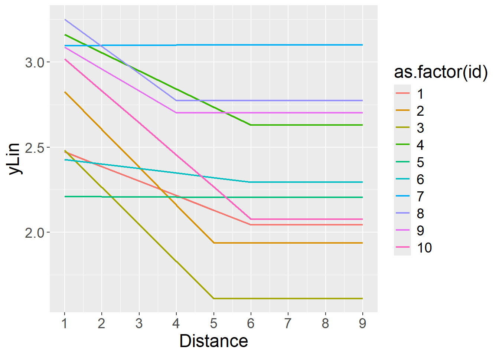

rm(list=ls())
library(ggplot2)
library(glmmTMB)
library(mgcv)
set.seed(1006)Power Simulation con Gamma & Gam
Lo scenario prevederebbe un disegno fattoriale 3 (Numero di riferimento: 0, 1, 2; within-subject) × 9 (Distanza: da 1 a 9; within-subject), con numerosi trial ripetuti in ogni condizione.
Tuttavia, l’elemento di maggiore interesse, per il quale si vuole valutare la potenza, è l’effetto Distanza nel caso del numero di riferimento zero (0). Pertanto, in questa analisi ci concentreremo esclusivamente sulla simulazione in tale condizione. Si potrà poi ampliare generando le altre due condizioni e valutando l’interazione.
Inoltre, il fattore “Distanza” può essere considerato come un fattore categoriale, ma visto il numero di livelli e la correlazione tra effetti adiacenti questo rischierebbe di portare a una sovraparametrizzazione. Per evitare questo problema, proponiamo di trattare Distanza come una variabile quantitativa continua. Poiché si assume che l’effetto possa essere non-lineare, l’analisi statistica potrebbe prevedere i gam.
Pacchetti & workspace
Definisco alcuni parametri iniziali del disegno di ricerca
Numero di livelli, osservazioni (trial), e partecipanti.
ndistances = 9 # numero di livelli del fattore Distanza
k = 40 # numero di trial per ciascun livello del fattore Distanza
N = 10 # numero di partecipantiStabilisco dei parametri che governano la relazione (non)lineare, che immaginiamo segmentata per semplicità. Il punto qui è generare uno scenario plausibile che potrebbe essere non lineare, e con la cui peculiare incertezza dovremo poi fare i conti (da cui i magnifici gam).
beta0 = 3 # intercetta (valore di y quando Distance = 0)
beta1 = -0.10 # slope (decremento della y per incremento unitario di Distance)
stop = 5 # dove la retta smette di scendereGenero la componente lineare
Genero ora la componente sulla scala lineare (chiamata yLinFixed).
Distance = rep(1:ndistances, each=k, times=N)
yLinFixed = beta0 + beta1 * pmin(Distance, stop)Show the code
ggplot(data=data.frame())+
geom_line(aes(x=Distance,y=yLinFixed),size=2)+
scale_x_continuous(breaks=1:ndistances)+
scale_y_continuous(limits=c(min(yLinFixed)-0.1,max(yLinFixed+0.1)))+
theme(text=element_text(size=25))Genero i dati simulati per tutti i partecipanti
Parte random
Preparo la parte random:
id = rep(1:N,each=ndistances*k) # genero il vettore degli "id"
tauInt = 0.3 # SD dell'intercetta random
tauSlo = 0.06 # SD della slope random
rInt = rep(rnorm(N,0,tauInt), each=ndistances*k) # genero le intercette random
rSlo = rep(rnorm(N,0,tauSlo), each=ndistances*k) # genero le slope random
rStop = rep(sample(-1:1,N,replace=T),each=ndistances*k)Componente lineare complessiva (fissa + random)
Genero la componente lineare per tutte le osservazioni e partecipanti, sommando la parte fissa e quella random:
yLin = beta0 + beta1 * pmin(Distance, stop+rStop) + rInt + rSlo * pmin(Distance, stop+rStop)Show the code
ggplot(data=data.frame(),aes(x=Distance,y=yLin,color=as.factor(id)))+
geom_line(size=0.8)+
scale_x_continuous(breaks=1:ndistances)+
theme(text=element_text(size=18))
Considerata una funzione legame logaritmica, i tempi attesi dovrebbero essere questi:
Show the code
ggplot(data=data.frame(),aes(x=Distance,y=exp(yLin)*30,color=as.factor(id)))+
geom_line(size=0.8)+
scale_x_continuous(breaks=1:ndistances)+
theme(text=element_text(size=18))Simulazione dei Tempi di Risposta (rt)
Genero finalmente i dati simulati usando la Gamma:
rt = rgamma(N*k*ndistances, shape = exp(yLin), scale = 30)Diamo un’occhiata ai tempi di risposta medi osservati per partecipante per condizione:
Show the code
dx = aggregate(rt,by=list(id=id,Distance=Distance),FUN=median)
ggplot(data=dx,aes(x=Distance,y=x,color=as.factor(id)))+
geom_line(size=0.8)+
scale_x_continuous(breaks=1:ndistances)+
theme(text=element_text(size=18))+
labs(y="Median Response Time")Diamo anche un’occhiata alla distribuzione complessiva dei tempi per verificare se assomiglia a quella dei tempi:
Show the code
ggplot(data=data.frame())+
geom_density(aes(x=rt,y=after_stat(density)),fill="black",alpha=.35,color=NA)+
theme(text=element_text(size=18))Analisi Statistica
Preparo il dataframe
Anzitutto mettiamo i dati osservati in un dataframe:
df = data.frame(id=as.factor(id), Distance, rt)
head(df) id Distance rt
1 1 1 387.6420
2 1 1 412.9519
3 1 1 280.9995
4 1 1 386.3703
5 1 1 433.6993
6 1 1 455.0178Fitting dei dati coi GAM
Fittiamo il modello gam con intercette e slope random, e la family Gamma con funzione legame logaritmo. Lo facciamo per quanto possibile, perché in realtà il mixed-model sarebbe idealmente implementato dalla funzione gamm(), che però al momento non supporta family diverse dalla Gaussian, quindi ci arrabattiamo in qualche modo con gam():
fit = gam(rt ~ s(Distance, k = 3) +
s(id, bs = "re") +
s(Distance, id, bs = "fs", m = 1),
family = Gamma(link = "log") ,
data = df)Warning in gam.side(sm, X, tol = .Machine$double.eps^0.5): model has repeated
1-d smooths of same variable.Abbiamo fissato la smoothing basis (bs) dei partecipanti come "re" che è descritta nel pacchetto come adatta per random effects distribuiti normalmente. Per la random slope (intesa come interazione Distance x id) abbiamo usato bs = "fs" descritti come efficienti quando c’è un gran numero di livelli e specialmente con l’uso dei gamm (mixed).
Show the code
ypred = predict(fit)
ggplot(data.frame(),aes(x=df$Distance,y=exp(ypred),group=as.factor(df$id),color=as.factor(df$id)))+
geom_line(size=1)+
geom_point(size=3)+
scale_x_continuous(breaks=1:ndistances)+
theme(text=element_text(size=25))+
labs(x="Distance",y="Expected RT",color="id")Test degli effetti?
Vediamo il summary del modello:
summary(fit)
Family: Gamma
Link function: log
Formula:
rt ~ s(Distance, k = 3) + s(id, bs = "re") + s(Distance, id,
bs = "fs", m = 1)
Parametric coefficients:
Estimate Std. Error t value Pr(>|t|)
(Intercept) 5.8723 0.1482 39.62 <2e-16 ***
---
Signif. codes: 0 '***' 0.001 '**' 0.01 '*' 0.05 '.' 0.1 ' ' 1
Approximate significance of smooth terms:
edf Ref.df F p-value
s(Distance) 1.880 1.904 56.382 <2e-16 ***
s(id) 4.495 10.000 0.629 <2e-16 ***
s(Distance,id) 46.521 88.000 6783.745 0.182
---
Signif. codes: 0 '***' 0.001 '**' 0.01 '*' 0.05 '.' 0.1 ' ' 1
R-sq.(adj) = 0.688 Deviance explained = 65.8%
GCV = 0.096206 Scale est. = 0.090897 n = 3600La seguente tabella estrapolata dal summary, in particolare, ci offre dei test: 1) per l’effetto fisso generale di Distance; 2) per la varianza delle intercette random; 3) per la varianza delle slope random.
summary(fit)$s.table edf Ref.df F p-value
s(Distance) 1.879660 1.903602 56.3817616 0.0000000
s(id) 4.494829 10.000000 0.6291842 0.0000000
s(Distance,id) 46.520616 88.000000 6783.7446934 0.1815236Contrariamente ai classici modelli lineari, con gli smoother non abbiamo un singolo trend lineare che è “significativamente positivo” o “significativamente negativo”. Un modo semplice per valutare se l’effetto principale di Distance (che è comunque “significativo”) è positivo, negativo, o un mix, è fare una visual inspection dell’effetto fisso principale:
plot(fit,pages=1)